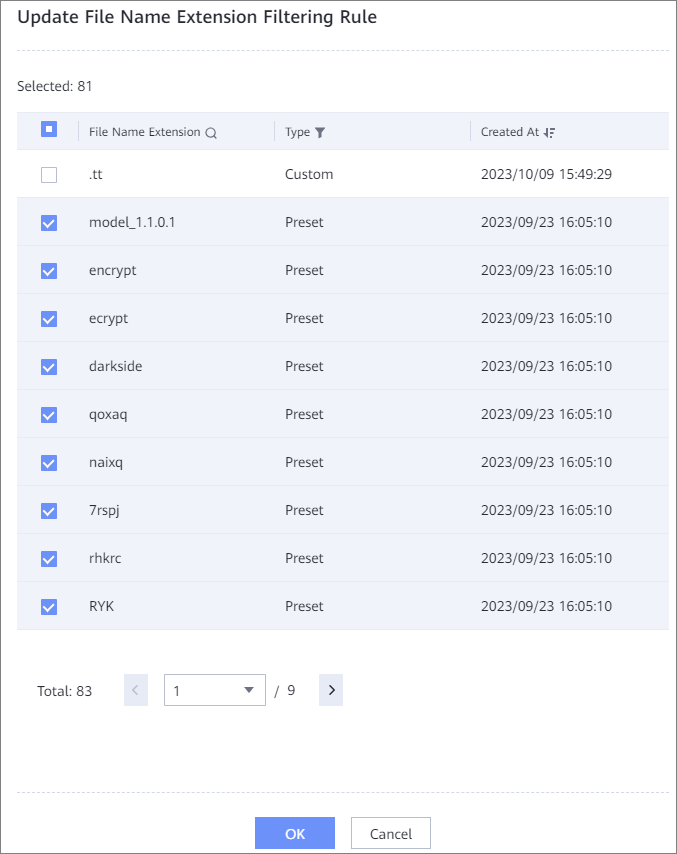

This section describes how to modify a file name extension filtering rule associated with a file system. After the modification, the new file name extension filtering rule takes effect when the file name extension status changes to Applied.
If you need to add file name extensions to be intercepted for a file system, create a file name extension filtering rule first by referring to Creating a File Name Extension Filtering Rule.
The Update File Name Extension Filtering Rule window is displayed. By default, all file name extension filtering rules that have been associated with file systems are selected. Select or deselect file name extension filtering rules in the list as required.
